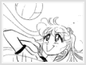
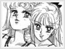
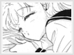
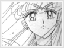

Entity » The Girl» Focus: Minako Arguably, Minako is the sweetest character in the series. When the girls are depressed, they can count on her to cheer them up. Her smile always brightens someone's day, and she can easily make someone laugh. Not only that, but she can also be a trusted friend whom you can rely on any time. Minako loves sports, particularly volleyball. She plays volleyball to relief stress and to develop and enhance her speed and precision, which are essential to her role as a senshi. Putting aside this hobby is just one of many sacrifices she had to made after she became a senshi. Once in a while though, she will play for fun to relieve her stress or touch up on her skills. Aside from sports, she also enjoys playing in the arcade and chasing after her idols. Her hobby of chasing idols probably led her to become one herself. She also speaks very fluent English, though it is coincidentally, her least favorite subject. Minako doesn't have a particularly high tolerance of children, and gets irritated with them quite easily. Minako and Usagi have very similar looks, as you might have noticed. The main reason for the similarity originates with the creator. Naoko created Sailor Venus before Sailor Moon, so Sailor Moon's looks are subsequently based off of Sailor Venus's. Their looks have come in handy, for Minako has had to masquerade as Sailor Moon in order to conceal and protect Sailor Moon's real identity. As beautiful as her appearance is, Minako's inner beauty is much greater than her outer. Minako has a beautiful and pure heart that portrays her personality, as shown when her heart crystal was captured by a villain. Prior to the capture, she had felt that her heart wasn't as pure as the other inner senshi, because she hasn't had her heart captured at the time. She took immediate action, donating blood, giving gifts, etc. as if she doubted the purity of her heart. When her heart was finally captured, she was so overjoyed that she ran down the sidewalk with her heart crystal in her hands, until she finally collapsed. The scene was incredibly touching and tear-jerking. Most of the time, she displays her childish side, but she is always there when a friend is in need, and she will willingly sacrifice everything in a heartbeat to make her loved ones happy. Aside from her beauty, she is a comic relief ditz. She has a tendency of making funny misquotes at times, and her actions often brings laughter from the audience. She is an inspirational character who rouses joyful laughter and tearful sadness, a definite need in the series.  One of her greater qualities is her leadership ability. It has been debated on whether she is the actual leader of the inner senshi instead of Sailor Moon. She will often step in for Sailor Moon, or aid her when she became unsure in battle. For example, in the R movie, when the inners were transporting onto Fiore's asteroid, they were attacked by a youma. Sailor Venus lead the "Sailor Planet Attack" and destroyed the youma. Later on, she gave instructions to Sailor Moon on how to handle a ring of youma that had surrounded them. As briefly mentioned before, one of her qualities is her innate ability to sacrifice everything to make loved ones happy. Minako's dream of becoming an idol and to serve her people is exceedingly important to her. When she once entered a idol contest, Yaten, one of the judges, asked her why she tries so hard to become an idol. She replied with dignity: "Because I want to answer to everyone's feelings. Usagi told me to give it my best. My dreams are everyone's dreams. Everyone's dreams are my dreams." These are brave words for such a young girl. She entered this contest not because she wanted to show everyone how good of an idol she can be, but she wanted to make other people happy in every way she can. Minako is truly a remarkable, beautiful, and special character. |